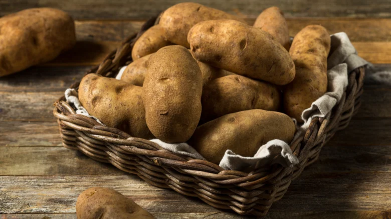

Welcome to my web page about potatoes!
Potatoes are great! You can "Boil 'em, mash 'em, stick 'em in a stew" just like Sam Gamgee.
Link to twice baked potatoes recipe.Here are some beautiful russets.
Best potatoes to use for each cooking method:
| Bake | Boil | Fry | Roast | Mash | |
|---|---|---|---|---|---|
| Russet | ✓ | X | ✓ | ✓ | ✓ |
| Long Whites | ✓ | X | X | ✓ | ✓ |
| Yellow | X | X | X | X | ✓ |
| White | X | ✓ | ✓ | X | X |
My favorite potato dishes:
Hooray for potatoes!